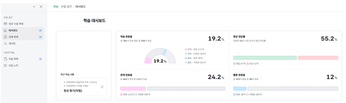
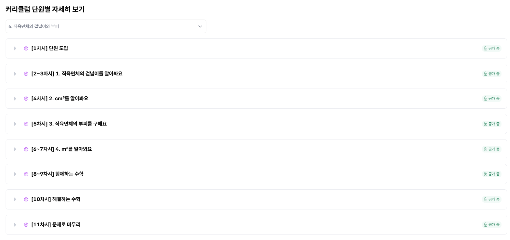
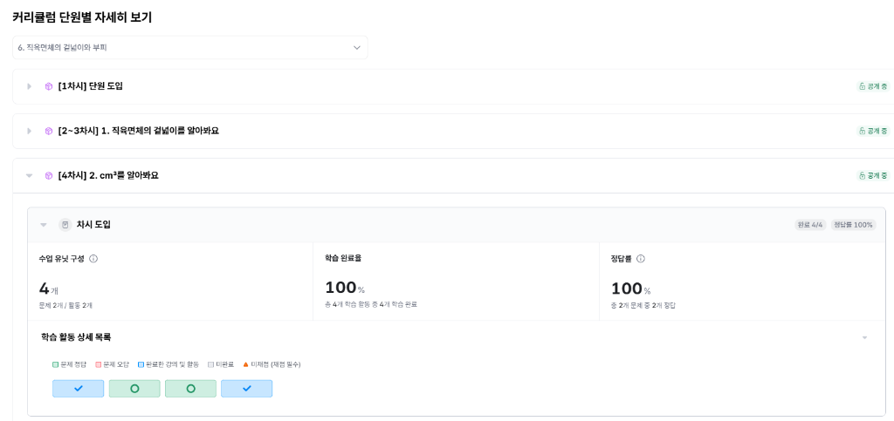
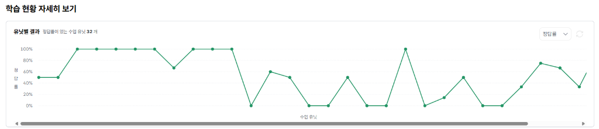

✦
✦
구름
AI 디지털 교육자료 포털
나의 수학 공부를 한눈에!
아이스크림 AI
디지털 교육자료
확인하기!
완료한 활동, 정답률, 다시 볼 내용을
쉽고 차근차근 살펴보아요.
아이스크림 AI 디지털 교육자료 안내
1 / 10
STEP 1
포털에 로그인해요
AI 디지털 교육자료 포털에 들어가 수학 교육자료를 선택해요.
1
포털 로그인
내 계정으로 접속해요.
내 계정으로 접속해요.
→
2
수학 교육자료 홈
수학 화면으로 이동해요.
수학 화면으로 이동해요.
💡
처음에는 선생님이 알려준 방법대로 천천히 따라 들어가면 돼요.
AI 디지털 교육자료 포털 · 수학 교육자료
2 / 10
STEP 2
대시보드 메뉴를 찾아요
수학 교육자료 홈 왼쪽 메뉴에서 대시보드를 눌러요.
🙂
"대시보드에서는 내가 공부한 결과를 한곳에서 볼 수 있어!"
➜
수업 공간 → 대시보드
👆
AI 디지털 교육자료 포털 · 수학 교육자료
3 / 10
STEP 3
내 학습 현황을 봐요
숫자와 그래프로 나의 학습 상황을 확인할 수 있어요.

📊
완료율, 평균 정답률, 활동 완료율을 보며 오늘 공부를 돌아봐요.
AI 디지털 교육자료 포털 · 수학 교육자료
4 / 10
STEP 4
완료율은 참고 자료예요
대시보드 수치는 디지털 자료에서 한 활동을 기준으로 보여줘요.
📘
교과서나 활동지로
공부한 내용
≠
🖥️
대시보드에
보이는 수치
완료율이 낮아도 괜찮아요!
아직 끝내지 않은 디지털 활동이 있는지 확인하고, 필요한 활동부터 다시 해보면 돼요.
AI 디지털 교육자료 포털 · 수학 교육자료
5 / 10
STEP 5
이해한 내용을 확인해요
지식 달성 현황에서 어떤 개념을 잘 이해했는지 살펴봐요.
달성
잘 이해한 내용이에요.
도전
한 번 더 연습하면 좋아요.
기록 없음
아직 확인할 활동이 적어요.
✅
초록색이 많아질수록 내가 이해한 내용이 늘어나는 거예요.
AI 디지털 교육자료 포털 · 수학 교육자료
6 / 10
STEP 6
단원과 차시를 골라요
확인하고 싶은 단원과 차시를 선택해 자세한 결과를 봐요.

🔎
오늘 배운 차시부터 확인하면 가장 쉽게 찾을 수 있어요.
AI 디지털 교육자료 포털 · 수학 교육자료
7 / 10
STEP 7
활동별 결과를 봐요
문제, 활동, 학습 결과가 차시별로 정리되어 있어요.

📝
아직 하지 않은 활동이 보이면 수업 시간이나 복습 시간에 이어서 해요.
AI 디지털 교육자료 포털 · 수학 교육자료
8 / 10
STEP 8
정답률을 확인해요
그래프를 보며 어떤 수업을 다시 보면 좋을지 찾아요.

📍
동그란 점을 살펴보면 수업별 정답률을 더 자세히 알 수 있어요.
AI 디지털 교육자료 포털 · 수학 교육자료
9 / 10
FINISH
대시보드로 스스로 공부해요!
결과를 보고 오늘 할 일을 하나씩 정해봐요.

🌟
완료하지 않은 활동 먼저 끝내기
💪
어려웠던 문제를 다시 풀어보기
아이스크림 AI 디지털 교육자료로 수학 공부도 차근차근 해낼 수 있어요!
오늘의 미션 완료
10 / 10